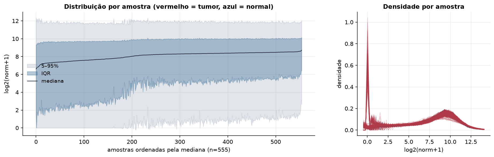
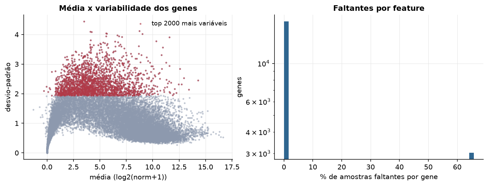
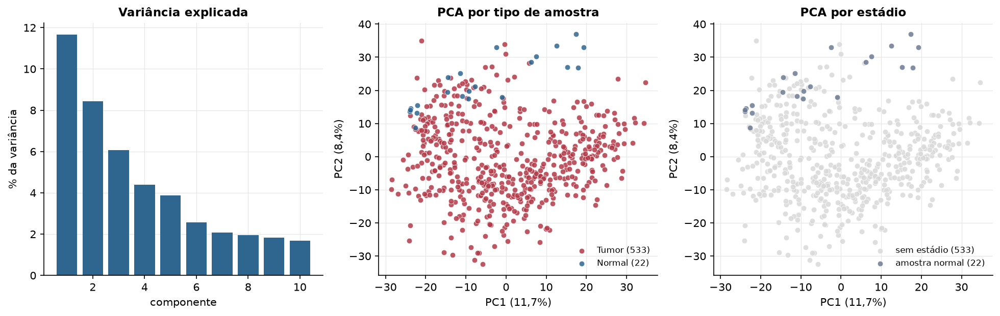
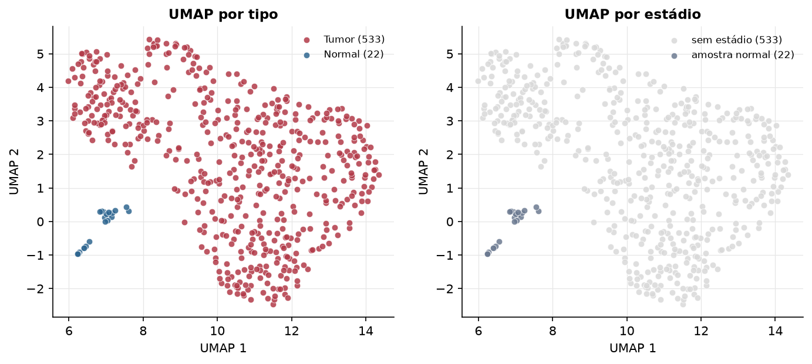
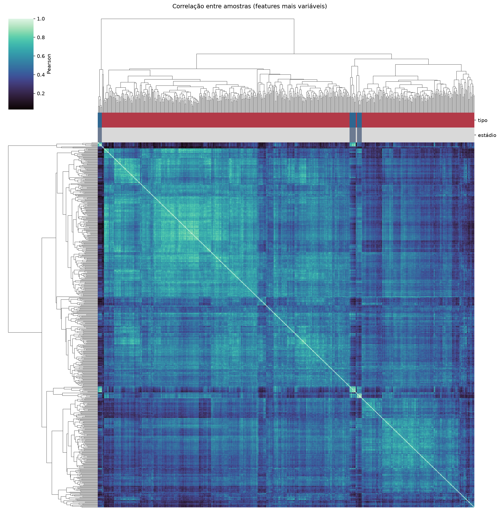
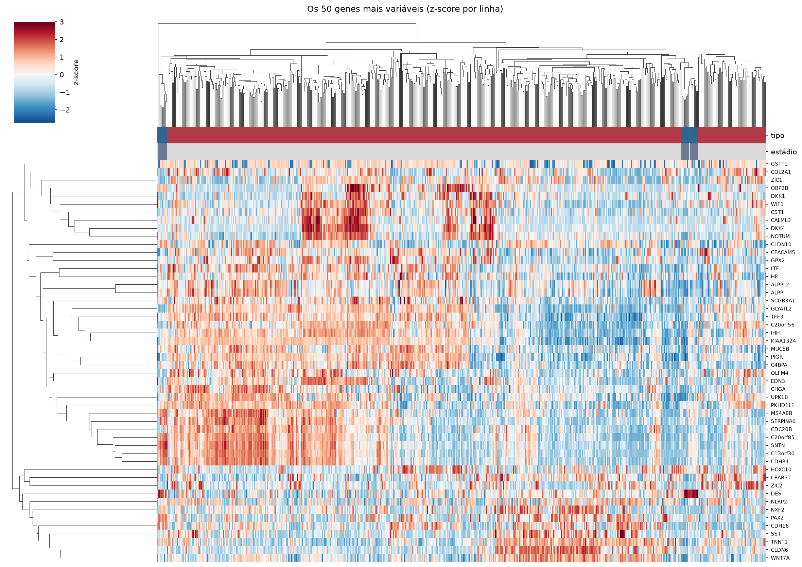
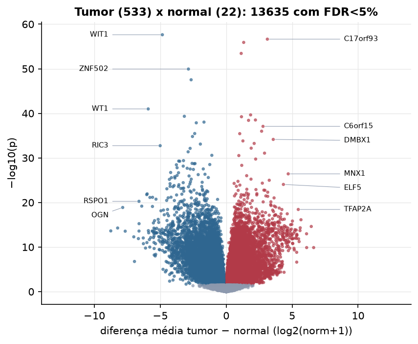
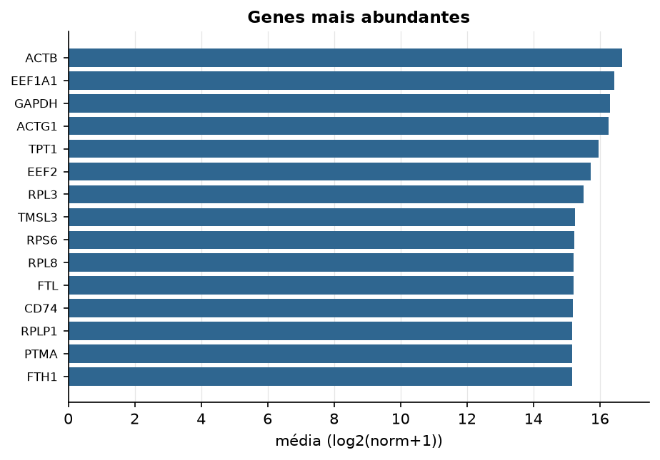

UCEC · RNA-seq (PanCanAtlas)
Illumina HiSeq, RSEM normalizado e corrigido por lote (EB++), log2(x+1) · gerado em 22/10/2026 05:36
20.531genes
533amostras tumorais
22amostras normais
9,7%valores faltantes
Fonte: PanCanAtlas EB++ via API do Xena
Estes valores já vêm normalizados e com correção de lote entre plataformas e centros. Servem bem para modelos gaussianos ou redes neurais; para um modelo de contagem use as contagens brutas do GDC.
Principais resultados
- 20.531 genes medidos em 555 amostras (533 tumorais e 22 normais); 9,7% dos valores estão faltando.
- Os dois primeiros componentes principais explicam 11,7% e 8,4% da variância das features mais variáveis.
- Correlação mediana entre amostras: 0,48.
- Amostras com correlação muito abaixo das demais (possíveis outliers técnicos): TCGA-AX-A3FV-01, TCGA-AX-A3FZ-01.
- Tumor x normal: 13635 genes diferentes com FDR < 5% (7136 maiores no tumor, 6499 maiores no normal; 22 pacientes têm o par tumor-normal).
- Mais aumentados no tumor: C17orf93, PRDM13, IL1F9, POU4F1, TBX20, HIST1H1B, HMX2, C6orf15.
- Mais reduzidos no tumor: WIT1, ZNF502, LOC339290, WT1, GSPT2, RNLS, FMOD, STXBP1.
- Associações clínicas com p < 0,05 nos componentes principais: PC1 com idade (p=0.00019); PC2 com idade (p=3.8e-07); PC3 com idade (p=4.1e-05); PC1 com sobrevida (p=4.5e-05); PC2 com sobrevida (p=5.4e-05).
- Em mediana, 80,8% dos genes têm expressão acima de log2(norm+1)=1 em cada amostra.
Distribuição dos valores


Estrutura das amostras




Tumor x normal

Features mais diferentes entre tumor e normal
| diferenca_tumor_menos_normal | t | p | fdr | |
|---|---|---|---|---|
| WIT1 | -4.843 | -37.055 | 2.34e-58 | 4.71e-54 |
| C17orf93 | 3.119 | 22.984 | 2.29e-57 | 2.3e-53 |
| PRDM13 | 1.325 | 17.869 | 1.23e-56 | 8.23e-53 |
| IL1F9 | 1.135 | 17.431 | 3.62e-54 | 1.82e-50 |
| ZNF502 | -2.868 | -25.43 | 1.16e-50 | 4.67e-47 |
| LOC339290 | -2.662 | -28.273 | 2.96e-48 | 9.95e-45 |
| WT1 | -5.917 | -34.502 | 1.02e-41 | 2.95e-38 |
| POU4F1 | 1.848 | 18.989 | 2.23e-40 | 5.63e-37 |
| GSPT2 | -3.176 | -28.995 | 4.59e-40 | 1.03e-36 |
| TBX20 | 1.157 | 16.379 | 5.79e-40 | 1.17e-36 |
| HIST1H1B | 2.214 | 25.01 | 3.08e-39 | 5.65e-36 |
| HMX2 | 1.692 | 16.131 | 3.72e-39 | 6.25e-36 |
| RNLS | -1.687 | -17.39 | 9.21e-39 | 1.43e-35 |
| FMOD | -2.271 | -22.156 | 1.34e-38 | 1.92e-35 |
| C6orf15 | 2.789 | 17.66 | 8.33e-38 | 1.12e-34 |
| ACTL8 | 2.683 | 18.194 | 1.02e-36 | 1.28e-33 |
| STXBP1 | -2.391 | -29.688 | 3.39e-36 | 4.02e-33 |
| STX6 | 1.025 | 26.758 | 3.61e-36 | 4.04e-33 |
| ZNF677 | -2.561 | -24.356 | 1.57e-35 | 1.67e-32 |
| DMBX1 | 3.565 | 22.698 | 7.06e-35 | 7.11e-32 |
| MMP13 | 1.266 | 14.862 | 1.54e-34 | 1.48e-31 |
| HIST1H3F | 2.119 | 22.656 | 5.66e-34 | 5.18e-31 |
| NPTXR | -1.961 | -18.219 | 7.87e-34 | 6.9e-31 |
| RIC3 | -5.011 | -35.227 | 1.8e-33 | 1.51e-30 |
| LCN15 | 1.893 | 14.1 | 6.49e-33 | 5.23e-30 |
| DSEL | -2.738 | -23.473 | 7.23e-33 | 5.6e-30 |
| ACOX2 | -2.889 | -26.42 | 4.27e-32 | 3.19e-29 |
| TGM7 | 2.905 | 14.82 | 8.47e-32 | 6.09e-29 |
| MLH1 | -1.092 | -13.625 | 2.61e-31 | 1.82e-28 |
| ELP3 | 0.955 | 14.739 | 2.95e-31 | 1.98e-28 |
Associação com variáveis clínicas
p-valores da associação dos três primeiros componentes principais (só tumores) com estádio (Kruskal-Wallis), sexo (Mann-Whitney), idade (Spearman) e sobrevida global (Cox univariado).
| estádio (Kruskal) | sexo (Mann-Whitney) | idade (Spearman) | sobrevida OS (Cox) | |
|---|---|---|---|---|
| PC1 (11,9%) | 0.00019 | 4.48e-05 | ||
| PC2 (8,2%) | 3.84e-07 | 5.37e-05 | ||
| PC3 (5,5%) | 4.09e-05 | 0.854 |
Mais abundantes
